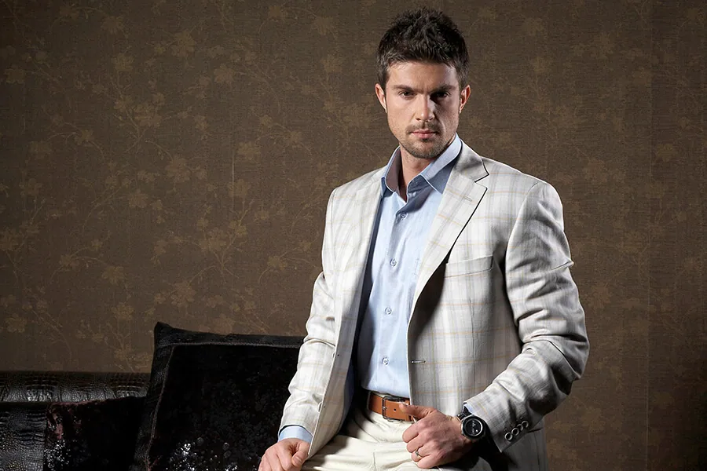

Первая встреча
1 часВыбираем изделие, ткань и фурнитуру. Мастер снимает мерки, затем строит персональные лекала.
DITALE D’ORO · Москва
Шьём на заказ с 1998 года. Первая беседа, работа мастеров и обе примерки проходят в одном ателье в центре Москвы.
Запланировать визит
Портной учитывает высоту плеч, осанку и посадку, в которой вам удобно. Ателье указывает 25-летний опыт своих мастеров и около 70% ручной работы в технологии bespoke.
Собираем детали на бортовке. На примерке уточняем форму изделия до окончательной отделки.

Технология bespoke
Выбираем изделие, ткань и фурнитуру. Мастер снимает мерки, затем строит персональные лекала.
Надеваем собранную вещь. Проверяем свободу движения, длину и баланс, намечаем корректировки.
Проверяем посадку после доработки. Готовое изделие можно забирать.
Костюм, пиджак и жилет можно заказать по отдельности или продумать как комплект.
